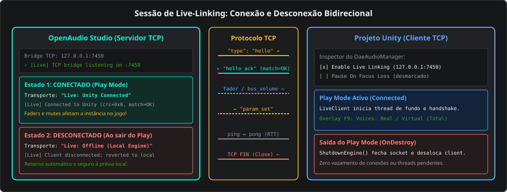
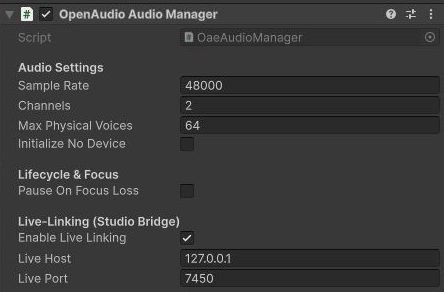
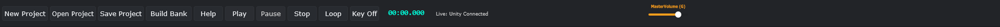
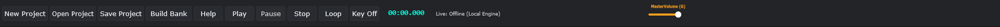

API C# e edição ao vivo na Unity
Dispare sons a partir de regras do jogo, mantenha eventos longos sob controle e ajuste a mixagem durante o Play Mode.
Um som curto a partir de um botão
Use a cena do capítulo 9, configure o emissor em Manual para o teste ou use apenas o gerenciador e o carregador. Salve AudioDoJogo.cs, adicione-o a um GameObject e vincule TocarMoeda ao On Click de um botão da Unity. Cada clique toca uma moeda. As chamadas usam o namespace OpenAudio.
using OpenAudio;
using UnityEngine;
public class AudioDoJogo : MonoBehaviour
{
[EventRef] public string evento = "event:/sfx/coin";
public void TocarMoeda()
{
var sistema = OaeAudioManager.Instance?.System;
if (sistema == null || !sistema.IsValid) return;
try
{
sistema.PlayOneShot(evento);
}
catch (OaeException erro)
{
Debug.LogWarning(erro.Message, this);
}
}
}Controle de uma instância
GetEvent busca a descrição. CreateInstance() cria uma reprodução individual. Guarde a instância enquanto precisar mudar volume, pitch, pan, posição na timeline ou parâmetros. Pare e libere ao terminar. Use KeyOff() quando a autoria prevê sustentação. Stop() pede encerramento. Parâmetros locais usam SetParameter ou SetParameterWithLabel. Parâmetros globais usam SetGlobalParameter ou SetGlobalParameterWithLabel.
var tema = sistema.GetEvent("event:/music/theme").CreateInstance();
tema.OnTimelineBeat += batida => Debug.Log($"{batida.bar}.{batida.beat}");
tema.OnTimelineMarker += marcador => Debug.Log(marcador.Name);
tema.Start();
// Ao encerrar a reprodução, antes de descarregar o banco:
tema.Stop(OaeStopMode.Immediate);
tema.Dispose();No jogo, execute o encerramento em uma ação posterior, por exemplo na troca de fase. As notificações de batida e marcador dependem de itens de tempo e marcadores no evento publicado. A moeda e o tema básicos servem para testar a reprodução. Para verificar os callbacks, use um evento com os itens correspondentes. O gerenciador chama Update(), que despacha notificações, incluindo início, parada, roubo de instância e sons iniciados ou encerrados.
Volume do jogo, pausa e medição
sistema.GetBus("bus:/music").Volume = 0.5f;
sistema.GetVca("vca:/game_audio").Volume = 0.8f;
sistema.GetBus("bus:/sfx").Paused = true;
sistema.GetBus("bus:/sfx").Paused = false;O ganho da API é linear. 0.5 corresponde a aproximadamente -6 dB. Um barramento recebe áudio e pode aplicar efeitos. Um VCA coordena o ganho dos membros que recebeu na autoria. O controle FadeTo faz uma mudança gradual, GetMeter lê pico e RMS e GetChannelsPlaying mostra a contagem de vozes. Para aplicar um snapshot, obtenha a descrição pelo caminho snapshot:/pause_menu, crie uma instância, inicie e encerre ao sair da pausa.
Ligue o VCA ao menu de opções
Use o banco de ExampleGameProject, que declara vca:/game_audio com música e efeitos. Em uma cena com Manager e Loader, salve o código abaixo em VolumeDoJogo.cs e adicione-o a um GameObject. No Slider da UI, defina a faixa de 0 a 1 e ligue On Value Changed a Ajustar(float) na opção de valor dinâmico.
using OpenAudio;
using UnityEngine;
public class VolumeDoJogo : MonoBehaviour
{
public void Ajustar(float valor)
{
var sistema = OaeAudioManager.Instance?.System;
if (sistema == null || !sistema.IsValid) return;
try
{
sistema.GetVca("vca:/game_audio").Volume = Mathf.Clamp01(valor);
}
catch (OaeException erro)
{
Debug.LogWarning(erro.Message, this);
}
}
}Com música tocando, mova de 1 para 0,5. Dispare também a moeda. Ambos recebem o fator. Em seguida, compare com um ajuste apenas em bus:/music. O capítulo Barramentos, VCAs e snapshots explica a diferença. Se o caminho do VCA não for encontrado, confira a publicação e a lista de membros.
Live-Linking


127.0.0.1 e a porta TCP 7450.
Evidência visual de conexão e desconexão no transporte
A barra de transporte do OpenAudio Studio altera dinamicamente seu rótulo de telemetria ao negociar o handshake e ao encerrar a sessão:
1. Conectado (Play Mode ativo na Unity): O status exibe o cliente identificado em verde/ciano brilhante (Live: Unity Connected):

2. Desconectado (Saída do Play Mode): Ao fechar o socket, o status reverte imediatamente para Live: Offline (Local Engine):

- Publique o banco no Studio e copie o
.banke seu catálogo paraStreamingAssets. Carregue o banco antes do primeiro disparo. No Audio Manager, ative Enable Live Linking, use127.0.0.1e a porta7450. Deixe Pause On Focus Loss desmarcado para que o Studio continue visível durante o teste. - Abra Diagnostics & Log no Studio. Ao iniciar, o bridge registra
[Live] Live-Linking TCP bridge listening on 127.0.0.1:7450(ou porta indisponível caso outra instância já esteja em execução). Entre em Play Mode e procure a confirmação[Live] Connected to Unity (bank_crc32=..., match=OK).. Se os CRCs diferirem, o Studio registra o aviso[Live] WARNING: Connected to Unity with bank_crc32 mismatch...; publique de novo e copie o mesmo banco para a Unity. - Com um evento tocando, altere no Studio o fader, pan ou mute de seu barramento. Use Play, Stop ou Key Off no transporte para comparar o controle remoto com a prévia do Studio. Ao publicar com Build Bank, o log registra
[Build] Starting bank compilation...e, ao concluir,[Build] Bank compiled successfully!; em caso de erro, exibe[Build Error] Exit code: <código>acompanhado do detalhamento do compilador. - Saia do Play Mode para desconectar. O encerramento de
OaeAudioManager(emShutdownEngine()) fecha o socket TCP ordenadamente. O log do Studio informa[Live] Client disconnected; reverted to local StudioEngine.e a barra de transporte atualiza o status paraLive: Offline (Local Engine), retornando à prévia local sem travar o áudio em reprodução. Salve e republique para levar as alterações ao banco do jogo.
Para testar a identidade do banco no handshake, passe o CRC da publicação do jogo ao chamar EnableLiveLinking(host, port, bankCrc32). A conexão automática usa 0 como CRC desconhecido. O status de conexão, nesse caso, confirma que o cliente respondeu.
O Studio não oferece um profiler de vozes dedicado nesta versão (recurso planejado para etapa futura). A contagem de vozes reais e virtuais em tempo de execução fica no Diagnostics Overlay da Unity (F9), no formato Voices: X Real / Y Virtual (Total Z); o painel Diagnostics & Log do Studio concentra as mensagens operacionais e a telemetria da conexão.
Termos da API
- Instância
- Execução individual de um evento, com estado próprio.
- One-shot
- Disparo curto que segue até o fim sem controle posterior por quem o chamou.
- Callback
- Função que o motor chama quando acontece algo de interesse.
- Handshake
- Troca inicial de mensagens que estabelece a sessão entre Studio e jogo.